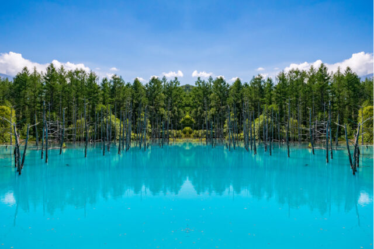
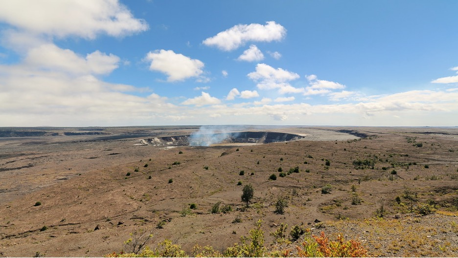
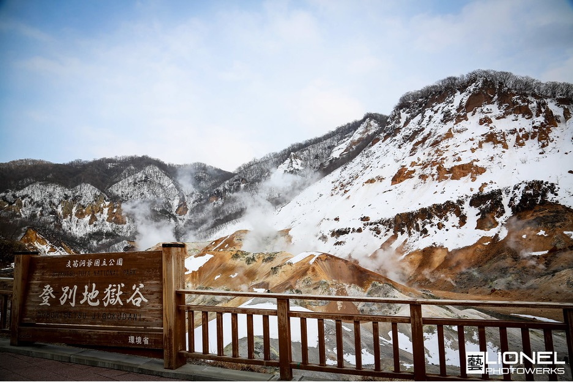

Ten Best Places
I don’t want to give ranks because all these places were equally
great.
only lived in Japan and the states, and I haven’t visited other
countries yet. I would love to visit other countries in the
future.
| Place/Event | Location | Rating |
|---|---|---|
Sapporo Snow Festival
|
Sapporo, Japan | |
|
Grand Canyon |
Arizona, U.S | |
|
Tokashiki Island |
Okianwa, Japan | |
|
Mount Monadnock |
Jaffrey/Dublin, New Hampshire, U.S | |
| Shirogane Blue Pond  |
Biie, Hokkaido, Japan | |
Hakone Onsen Area  |
Hakone, Kanagawa, Japan | |
Balboa Park  |
San Diego, CA, U.S | |
| Mt. Fuji |
Shizuoka, Japan | |
| Hawai'i Valcanoes National Park  |
the island of Hawai'i, Hawaii, U.S | |
| Noboribetsu Onsen  |
Noboribetsu, Hokkaido, Japan |